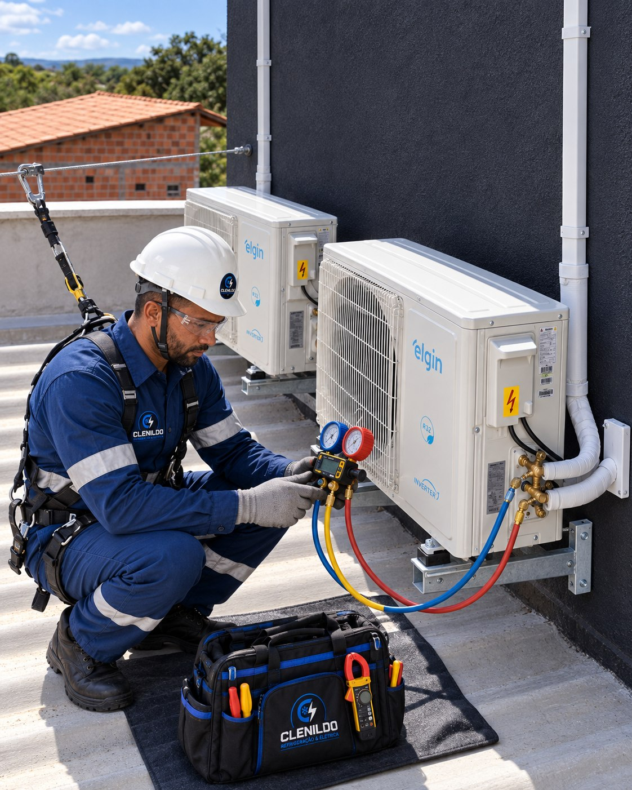

Diagnóstico e manutenção
Manutenção de Ar-Condicionado
Avaliação técnica e correção de falhas que afetam o resfriamento, o consumo e a confiabilidade do equipamento.
Solicitar orçamento
Recupere o desempenho do equipamento.
O atendimento começa pela análise dos sintomas, componentes e condições de instalação.
Após o diagnóstico, indicamos os ajustes ou reparos adequados para o sistema.